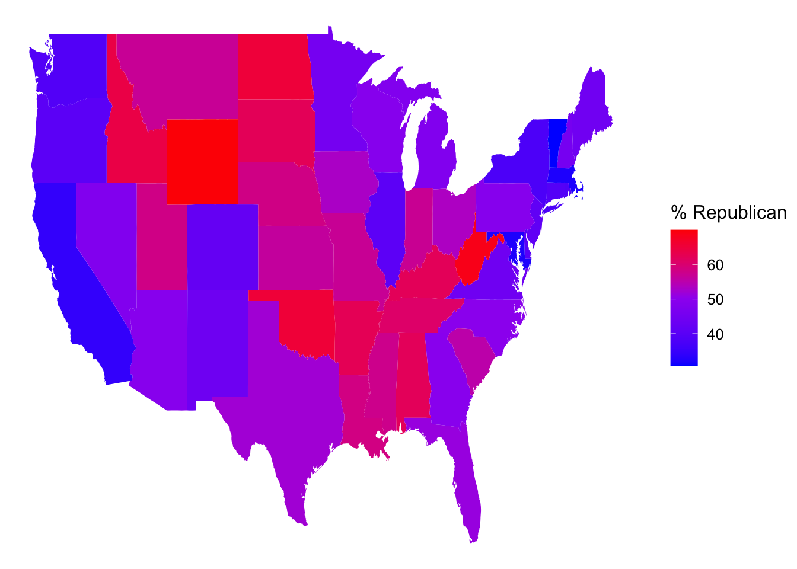
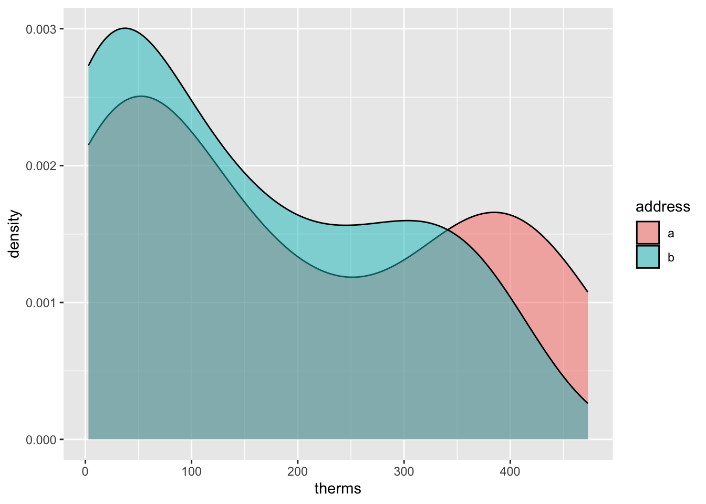
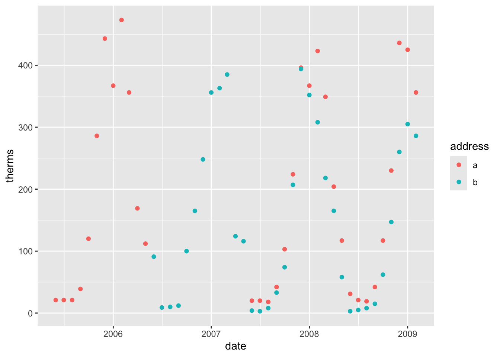
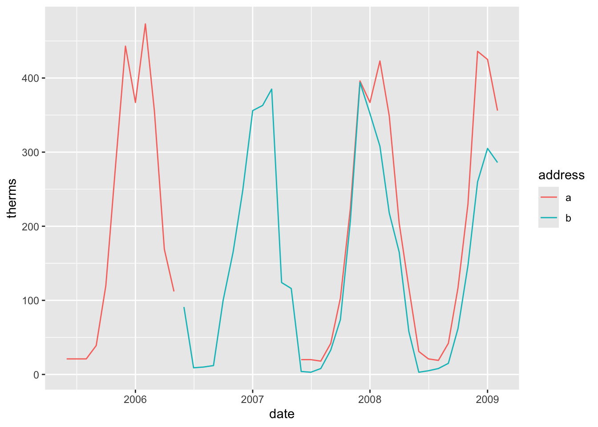
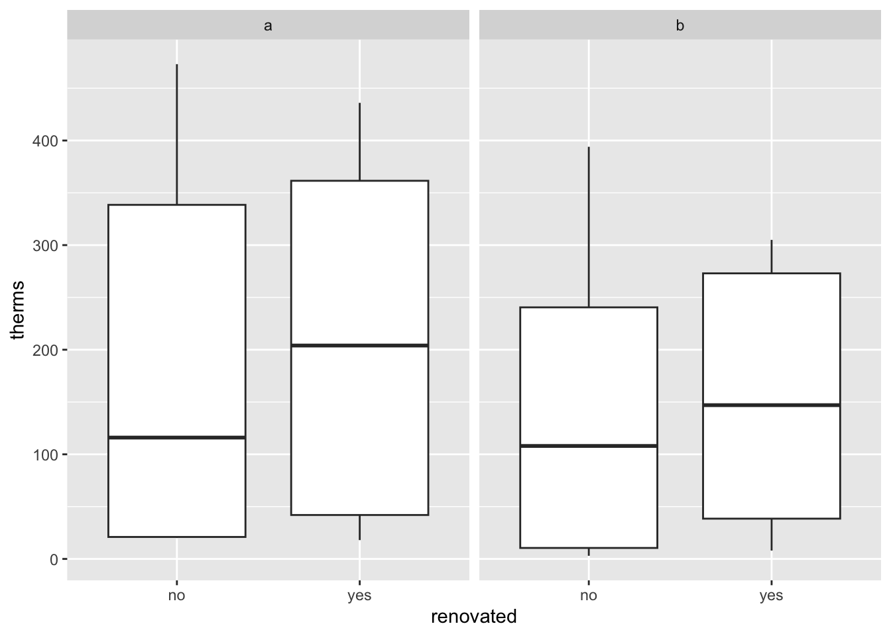
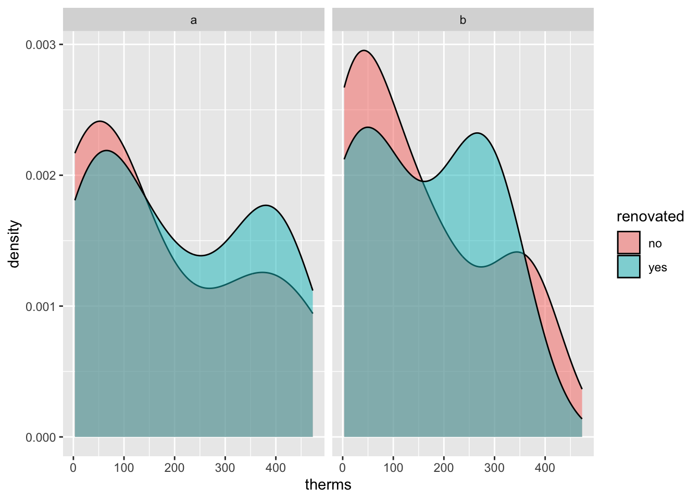
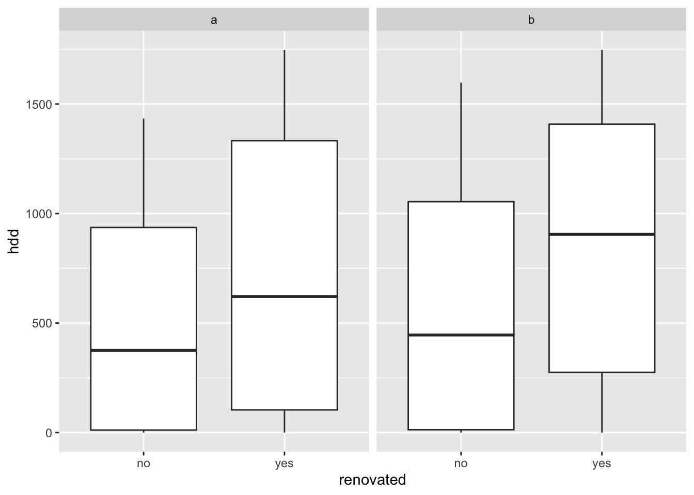
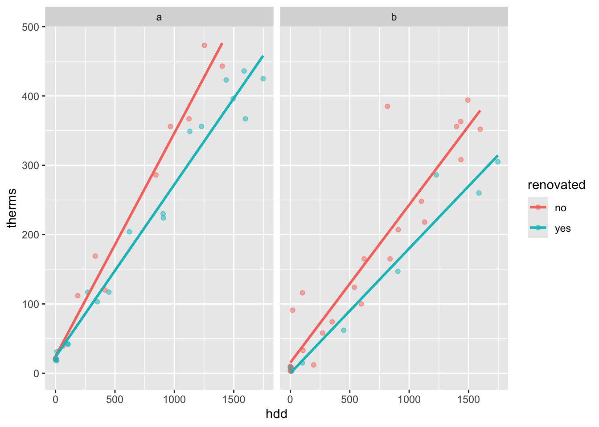
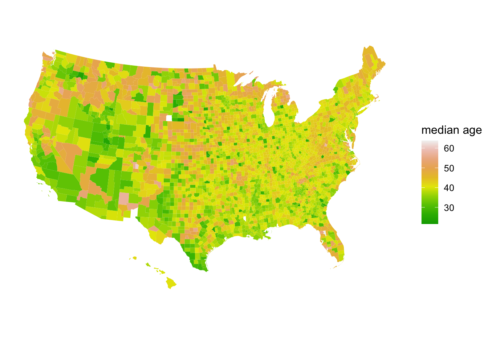

month year price therms hdd address renovated date
1 6 2005 35.21 21 0 a no 2005-06-01
2 7 2005 37.37 21 0 a no 2005-07-01
3 8 2005 36.93 21 3 a no 2005-08-01
4 9 2005 62.36 39 61 a no 2005-09-01
5 10 2005 184.15 120 416 a no 2005-10-01
6 11 2005 433.35 286 845 a no 2005-11-0111 Spatial Viz
Learning Goals
- Plot data points on top of a map using
ggplot(). - Create choropleth maps using
geom_map(). - Understand the basics of creating a map using
leaflet, including adding points and choropleths to a base map.
Additional Resources
For more information about the topics covered in this chapter, refer to the resources below:
- Creating maps with leaflet (YouTube) by Lisa Lendway
- More leaflet (YouTube) by Lisa Lendway
- Spatial data visualization (Chp 17, intro and 17.1, html) by Baumer et al
- Detailed leaflet documenation (html)
- leaflet cheat sheet (pdf)
- Provider map previews (html)
- Tutorial (html) by Andrew Ba Tran, investigative data reporter at Washington Post
- For more advanced work with spatial mapping, GIS in R, etc. see the sf package (html).
Instructions
Run the following commands in the Console to install the packages used in this activity into your machine if they are not already installed.
11.1 Review
In the previous activity, we explored a Simpson’s Paradox–it seemed that - states with higher spending… - tend to have lower average SAT scores.
BUT this was explained by a confounding or omitted or lurking variable which is the % of students in a state that take the SAT. Hence,
- States with higher spending…
- tend to have a higher % of students of students that take the SAT…
- which then “leads to” lower average SAT scores.
Thus, when controlling for the % of students that take the SAT, more spending is correlated with higher scores.
Let’s explore a Simpson’s paradox related to Mac!
Back in the 2000s, Macalester invested in insulating a few campus-owned houses, with the hopes of leading to energy savings. Former Mac Prof Danny Kaplan accessed monthly data on energy use and other info for these addresses, before and after renovations:
The part of dataset codebook is below:
| variable | meaning |
|---|---|
| therms | a measure of energy use–the more energy used, the larger the therms |
| address | a or b |
| renovated | whether the location had been renovated, yes or no |
| month | from 1 (January) to 12 (December) |
| hdd | monthly heating degree days. A proxy measure of outside temperatures–the higher the hdd, the COLDER it was outside |
11.2 Examples
Instructions
- Construct a plot that addresses each research question
- Include a 1-sentence summary of the plot.
Example 1
What was the range and typical energy used each month, as measured by therms? How does this differ by address?
Example 2
How did energy use (therms) change over time (date) at the two addresses?
Example 3
How did the typical energy use (therms) at the two addresses change before and after they were renovated?
Example 4
That seems unfortunate that energy usage went up after renovations. But also fishy.
Take 5 minutes (in your groups) to try and explain what’s going on here. Think: What confounding or lurking or omitted variable related to energy usage are we ignoring here? Try to make some plots to prove your point.
Example 5
Let’s summarize the punchlines by filling in the ???. It seemed that:
- After renovation…
- energy use increased.
BUT this was explained by a confounding or omitted or lurking variable: ???
- After renovation…
- ???…
- which then leads to higher energy use.
Thus, when controlling for ???, renovations led to decreased energy use.
11.3 New stuff
Types of spatial viz:
Point Maps: plotting locations of individual observations
example: bigfoot sightingsContour Maps: plotting the density or distribution of observations (not the individual observations themselves)
-
Choropleth Maps: plotting outcomes in different regions
These spatial maps can be static or dynamic/interactive.
11.4 Exercises
11.4.1 Preview
You’ll explore some R spatial viz tools below. In general, there are two important pieces to every map:
Piece 1: A dataset
This dataset must include either:
- location coordinates for your points of interest (for point maps); or
- variable outcomes for your regions of interest (for choropleth maps)
Piece 2: A background map
We need latitude and longitude coordinates to specify the boundaries for your regions of interest (eg: countries, states). This is where it gets really sticky!
- County-level, state-level, country-level, continent-level info live in multiple places.
- Where we grab this info can depend upon whether we want to make a point map or a choropleth map. (The background maps can be used somewhat interchangeably, but it requires extra code :/)
- Where we grab this info can also depend upon the structure of our data and how much data wrangling / cleaning we’re up for. For choropleth maps, the labels of regions in our data must match those in the background map. For example, if our data labels states with their abbreviations (eg: MN) and the background map refers to them as full names in lower case (eg: minnesota), we have to wrangle our data so that it matches the background map.
In short, the code for spatial viz gets very specialized. The goal of these exercises is to:
- play around and experience the wide variety of spatial viz tools out there
- understand the difference between point maps and choropleth maps
- have fun
You can skip around as you wish and it’s totally fine if you don’t finish everything. Just come back at some point to play around.
Part 1: Interactive points on a map with leaflet
Leaflet is an open-source JavaScript library for creating maps. We can use it inside R through the leaflet package.
This uses a different plotting framework than ggplot2, but still has a tidyverse feel (which will become more clear as we learn other tidyverse tools!).
The general steps are as follows:
- Create a map widget by calling
leaflet()and telling it the data to use. - Add a base map using
addTiles()(the default) oraddProviderTiles(). - Add layers to the map using layer functions (e.g.
addMarkers(),addPolygons()). - Print the map widget to display it.
Exercise 1: A leaflet with markers / points
Earlier this semester, I asked for the latitude and longitude of one of your favorite places. I rounded these to the nearest whole number, so that they’re near to but not exactly at those places. Let’s load the data and map it!
latitude longitude
1 59 18
2 45 -93
3 33 -117
4 40 116
5 40 106
6 37 -122Part a
You can use a “two-finger scroll” to zoom in and out.
Part b
PLAY AROUND! This map is interactive. Zoom in on one location. Keep zooming – what level of detail can you get into? How does that detail depend upon where you try to zoom in (thus what are the limitations of this tool)?
Exercise 2: Details
We can change all sorts of details in leaflet maps.
In general:
addProviderTiles()changes the base map.
To explore all available provider base maps, typeprovidersin the console. (Though some don’t work :/)-
Use
addMarkers()oraddCircles()to mark locations. Type?addControlinto the console to pull up a help file which summarizes the aesthetics of these markers and how you can change them. For example:-
weight= how thick to make the lines, points, pixels -
opacity= transparency (likealphainggplot2) - colors need to be in “hex” form. We used the
col2hex()function from thegplotslibrary to do that
-
Exercise 3: Your turn
The starbucks data, compiled by Danny Kaplan, contains information about every Starbucks in the world at the time the data were collected, including Latitude and Longitude:
Let’s focus on only those in Minnesota for now:
Create a leaflet map of the Starbucks locations in Minnesota. Keep it simple – go back to Exercise 1 for an example.
Part 2: Static points on a map
Leaflet is very powerful and fun. But:
- It’s not great when we have lots of points to map – it takes lots of time.
- It makes good interactive maps, but we often need a static map (eg: we can not print interactive maps!).
Let’s explore how to make point maps with ggplot(), not leaflet().
Exercise 3: A simple scatterplot
Let’s start with the ggplot() tools we already know. Construct a scatterplot of all starbucks locations, not just those in Minnesota, with:
- Latitude and Longitude coordinates (which goes on the y-axis?!)
- Make the points transparent (alpha = 0.2) and smaller (size = 0.2)
It’s pretty cool that the plots we already know can provide some spatial context. But what don’t you like about this plot?
Exercise 4: Adding a country-level background
Let’s add a background map of country-level boundaries.
Part a
First, we can grab country-level boundaries from the rnaturalearth package.
In your console, type world_boundaries to check out what’s stored there. Don’t print it our in your Rmd – printing it would be really messy there (even just the head()).
Part b
Run the chunks below to build up a new map.


Part c
Summarize what you learned about Starbucks from this map.
Exercise 5: Zooming in on some countries
Instead of world_boundaries <- ne_countries(returnclass = 'sf') we could zoom in on…
- the continent of Africa:
ne_countries(continent = 'Africa', returnclass = 'sf') - a set of countries:
ne_countries(country = c('france', 'united kingdom', 'germany'), returnclass = 'sf') - boundaries within a country:
ne_states(country = 'united states of america', returnclass = 'sf')
Our goal here will be to map the Starbucks locations in Canada, Mexico, and the US.
Part a
To make this map, we again need two pieces of information.
- Data on Starbucks for only Canada, Mexico, and the US, labeled as “CA”, “MX”, “US” in the
starbucksdata.
- A background map of state- and national-level boundaries in Canada, Mexico, and the US. This requires
ne_states()in thernaturalearthpackage where the countries are labeled ‘canada’, ‘mexico’, ‘united states of america’.
Part b
Make the map!


Exercise 6: A state and county-level map
Let’s get an even higher resolution map of Starbucks locations within the states of Minnesota, Wisconsin, North Dakota, and South Dakota, with a background map at the county-level.
Part a
To make this map, we again need two pieces of information.
- Data on Starbucks for only the states of interest.
- A background map of state- and county-level boundaries in these states. This requires
st_as_sf()in thesfpackage, andmap()in themapspackage, where the countries are labeled ‘minnesota’, ‘north dakota’, etc.
Simple feature collection with 6 features and 1 field
Geometry type: MULTIPOLYGON
Dimension: XY
Bounding box: xmin: -96.81268 ymin: 45.05167 xmax: -93.01397 ymax: 48.53526
Geodetic CRS: +proj=longlat +ellps=clrk66 +no_defs +type=crs
ID geom
minnesota,aitkin minnesota,aitkin MULTIPOLYGON (((-93.03689 4...
minnesota,anoka minnesota,anoka MULTIPOLYGON (((-93.51817 4...
minnesota,becker minnesota,becker MULTIPOLYGON (((-95.14537 4...
minnesota,beltrami minnesota,beltrami MULTIPOLYGON (((-95.58655 4...
minnesota,benton minnesota,benton MULTIPOLYGON (((-93.77027 4...
minnesota,big stone minnesota,big stone MULTIPOLYGON (((-96.10794 4...Part b
Adjust the code below to make the plot! Remove the # to run it.
Exercise 7: Contour maps
Especially when there are lots of point locations, and those locations start overlapping on a map, it can be tough to visualize areas of higher density. Consider the Starbucks locations in Canada, Mexico, and the US that we mapped earlier:

Now check out the contour map.

Part 3: Choropleth maps
Spatial data isn’t always in the form of point locations! For example, recall the state and county-level data on presidential elections.
In these datasets, we’re interested in the overall election outcome by region (state or county), not the specific geographic location of some observation. Let’s wrangle our data first. We’ll focus on just a few variables of interest, and create a new variable (repub_20_categories) that discretizes the repub_pct_20 variable into increments of 5 percentage points (for states) or 10 percentage points (for counties):
Exercise 8: State-level choropleth maps
Let’s map the 2020 Republican support in each state, repub_pct_20.
Part a
We again need two pieces of information.
Data on elections in each state, which we already have:
elections_by_state.A background map of state boundaries in the US. The boundaries we used for point maps don’t work here. (Optional detail: they’re
sfobjects and we now need adata.frameobject.) Instead, we can use themap_data()function from theggplot2package:
long lat group order region subregion
1 -87.46201 30.38968 1 1 alabama <NA>
2 -87.48493 30.37249 1 2 alabama <NA>
3 -87.52503 30.37249 1 3 alabama <NA>
4 -87.53076 30.33239 1 4 alabama <NA>
5 -87.57087 30.32665 1 5 alabama <NA>
6 -87.58806 30.32665 1 6 alabama <NA>Pause
Important detail: Note that the region variable in states_map, and the state_name variable in elections_by_state both label states by the full name in lower case letters. This is critical to the background map and our data being able to communicate.
long lat group order region subregion
1 -87.46201 30.38968 1 1 alabama <NA>
2 -87.48493 30.37249 1 2 alabama <NA>
3 -87.52503 30.37249 1 3 alabama <NA>
4 -87.53076 30.33239 1 4 alabama <NA>
5 -87.57087 30.32665 1 5 alabama <NA>
6 -87.58806 30.32665 1 6 alabama <NA> state_name state_abbr repub_pct_20 repub_20_categories
1 alabama AL 62.03 60-64
2 arkansas AR 62.40 60-64
3 arizona AZ 49.06 45-49
4 california CA 34.33 30-34
5 colorado CO 41.90 40-44
6 connecticut CT 39.21 35-39Part b
Now map repub_pct_20 by state.


It’s not easy to get fine control over the color scale for the quantitative repub_pct_20 variable. Instead, let’s plot the discretized version, repub_20_categories:


Part c
We can add other layers, like points, on top of a choropleth map. Add a Starbucks layer! Do you notice any relationship between Starbucks and elections? Or are we just doing things at this point? ;)

Details (if you’re curious)
-
map_idis a required aesthetic forgeom_map().- It specifies which variable in our dataset indicates the region (here
state_name). - It connects this variable (
state_name) to theregionvariable in our mapping background (states_map). These variables must have the same possible outcomes in order to be matched up (alabama,alaska,arizona,…).
- It specifies which variable in our dataset indicates the region (here
-
expand_limits()assures that the map covers the entire area it’s supposed to, by pulling longitudes and latitudes from thestates_map.
Part d
We used geom_sf() for point maps. What geom do we use for choropleth maps?
Exercise 9: County-level choropleth maps
Let’s map the 2020 Republican support in each county.
Part a
We again need two pieces of information.
Data on elections in each county, which we already have:
elections_by_county.A background map of county boundaries in the US, stored in the
county_mapdataset in thesocvizpackage:
long lat order hole piece group id
1 1225889 -1275020 1 FALSE 1 0500000US01001.1 01001
2 1235324 -1274008 2 FALSE 1 0500000US01001.1 01001
3 1244873 -1272331 3 FALSE 1 0500000US01001.1 01001
4 1244129 -1267515 4 FALSE 1 0500000US01001.1 01001
5 1272010 -1262889 5 FALSE 1 0500000US01001.1 01001
6 1276797 -1295514 6 FALSE 1 0500000US01001.1 01001Pause
Important detail: We officially have a headache. Our county_map refers to each county by a 5-number id. Our elections_by_counties data refers to each county by a county_fips code, which is mostly the same as id, BUT drops any 0’s at the beginning of the code.
long lat order hole piece group id
1 1225889 -1275020 1 FALSE 1 0500000US01001.1 01001
2 1235324 -1274008 2 FALSE 1 0500000US01001.1 01001
3 1244873 -1272331 3 FALSE 1 0500000US01001.1 01001
4 1244129 -1267515 4 FALSE 1 0500000US01001.1 01001
5 1272010 -1262889 5 FALSE 1 0500000US01001.1 01001
6 1276797 -1295514 6 FALSE 1 0500000US01001.1 01001 state_name state_abbr county_name county_fips repub_pct_20 median_age
1 Alabama AL Autauga County 1001 71.44 37.5
2 Alabama AL Baldwin County 1003 76.17 41.5
3 Alabama AL Barbour County 1005 53.45 38.3
4 Alabama AL Bibb County 1007 78.43 39.4
5 Alabama AL Blount County 1009 89.57 39.6
6 Alabama AL Bullock County 1011 24.84 39.6
median_rent repub_20_categories
1 668 70-79
2 693 70-79
3 382 50-59
4 351 70-79
5 403 80-89
6 276 20-29This just means that we have to wrangle the data so that it can communicate with the background map.
Part b
Now map Republican support by county. Let’s go straight to the discretized repub_20_categories variable, and a good color scale.

Exercise 10: Play around!
Construct county-level maps of median_rent and median_age.
Exercise 11: Choropleth maps with leaflet
Though ggplot() is often better for this purpose, we can also make choropleth maps with leaflet(). If you’re curious, check out the leaflet documentation:
11.5 Solutions
Click for Solutions
Example 1
Both addresses used between 0 and 450 therms per month. There seem to be two types of months – those with lower use around 50 therms and those with higher use around 300/400 therms.

Example 2
Energy use is seasonal, with higher usage in winter months. It seems that address a uses slightly more energy.


Example 3
At both addresses, typical energy use increased after renovations.


Example 4
lurking variable = outdoor temperature (as reflected by hdd)


Example 5
BUT this was explained by a confounding or omitted or lurking variable: hdd (outdoor temperature)
- After renovation…
- it happened to be colder…
- which then leads to higher energy use.
Thus, when controlling for outdoor temps, renovations led to decreased energy use.
Exercise 3: Your turn
Exercise 3: A simple scatterplot
It would be nice to also have some actual reference maps of countries in the background.

Exercise 6: A state and county-level map
Part b
Adjust the code below to make the plot! Remove the # to run it.

Exercise 7: Contour maps
Especially when there are lots of point locations, and those locations start overlapping on a map, it can be tough to visualize areas of higher density. Consider the Starbucks locations in Canada, Mexico, and the US that we mapped earlier:

Now check out the contour map.

Exercises Part 3: Choropleth maps
Spatial data isn’t always in the form of point locations! For example, recall the state and county-level data on presidential elections.
In these datasets, we’re interested in the overall election outcome by region (state or county), not the specific geographic location of some observation. Let’s wrangle our data first.
We’ll focus on just a few variables of interest, and create a new variable (repub_20_categories) that discretizes the repub_pct_20 variable into increments of 5 percentage points (for states) or 10 percentage points (for counties):
Exercise 8: State-level choropleth maps
Part d
geom_map()
Exercise 10: Play around!

